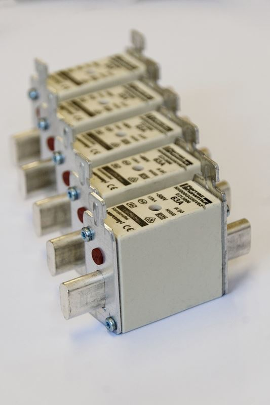

Poznański elektryk od napraw i montażu instalacji elektrycznych
Co zrobić gdy nie ma prądu, a wydaje się, że wina leży po stronie instalacji elektrycznej w budynku?
Po pierwsze warto wyjść na klatkę lub na zewnątrz domu i sprawdzić czy sąsiedzi również znaleźli się w podobnej sytuacji. Jeżeli nie warto zadzownić pod numer pogotowia energetycznego: 991 i zapytać czy nie zgłaszano awarii na państwa ulicy. Warto wiedzieć, że osoba na infolinii dysponuje tylko informacjami z systemu energetycznego oraz informacjami mieszkańców, którzy wcześniej mogli zaalarmować pogotowie energetyczne. Istnieje więc szansa, że awaria elektryczna w wyniku której nie mają państwo prądu nie jest widoczna w systemie energetycznym i są państwo pierwszą osobą, która dzwoni bo zapytać o awarię w okolicy.
W przypadku bloków, kamienic często wina leży w instalacji wspólnej budynku. W tym przypadku warto zaalarmować administrację, dozorcę, lub osobę odpowiedzialną za obslugę awarii w danej administracji. Często tego typu numery wywieszone są na klatce schodowej przy wejściu.
Reszta kroków powinna zostać wykonana przez osobę uprawnioną do pracy przy instalacjach elektrycznych dlatego, że każda awaria ma swój powód, nawet jeżeli jego następstwem było po prostu wyzwolenie wyłącznika nadmiarowo - prądowego lub bezpiecznika topikowego. W tych sytuacjach zalecamy skontaktowanie się z prywatnym pogotowiem elektrycznym działającym w trybie pilnym.
Artykuł ma charakter poglądowy i nie może być traktowany jako źródło wiedzy wykorzystywane do rzeczywistych napraw czy prac przy prądzie elektrycznym, ani wniosków teoretycznych mogących prowadzić do błędnych decyzji. Ponadto upomina się, że wszelkie prace związane z prądem elektrycznym, oraz wszelako pojętą instalacją elektryczną, powinny wykonywać osoby do tego uprawnione, z odpowiednim wykształceniem kierunkowym, wiedzą i zaświadczeniami.
Przyczytaj więcej o instalacjach elektrycznych, klikając tutaj.